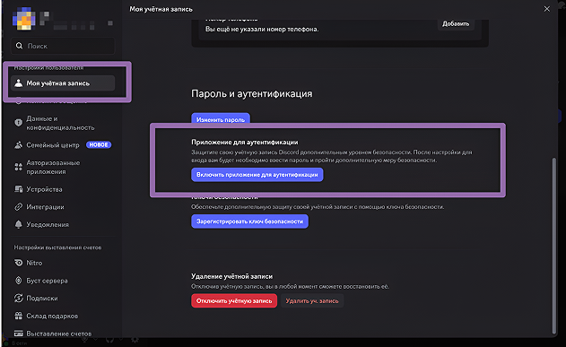
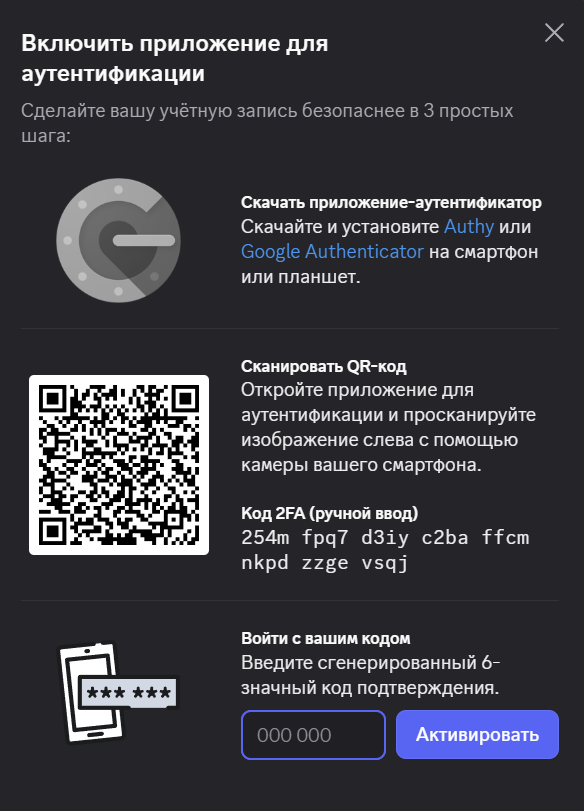
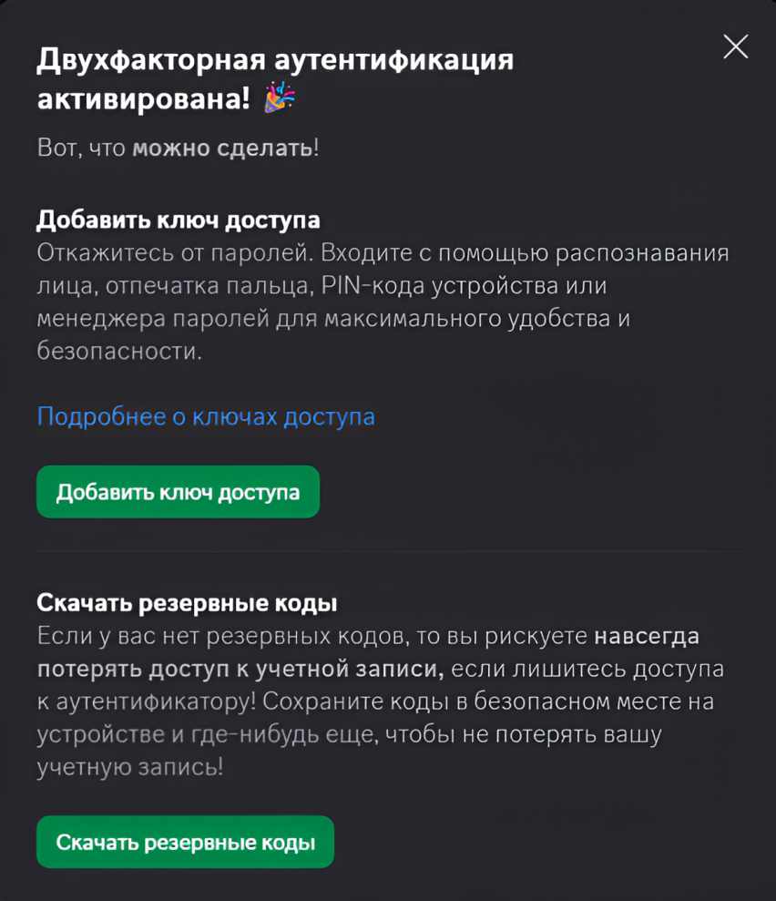
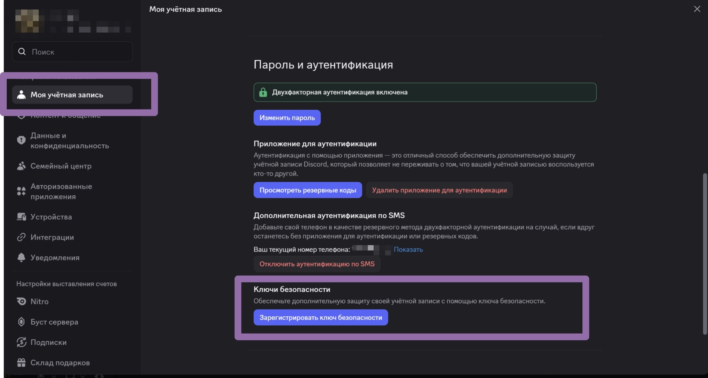
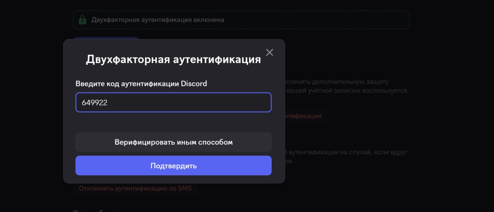
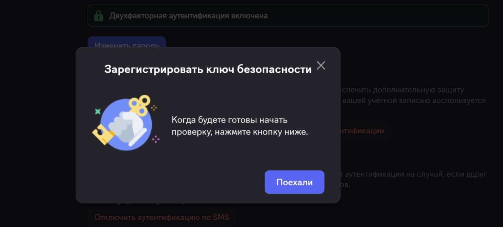
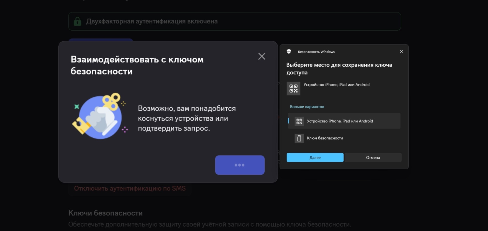
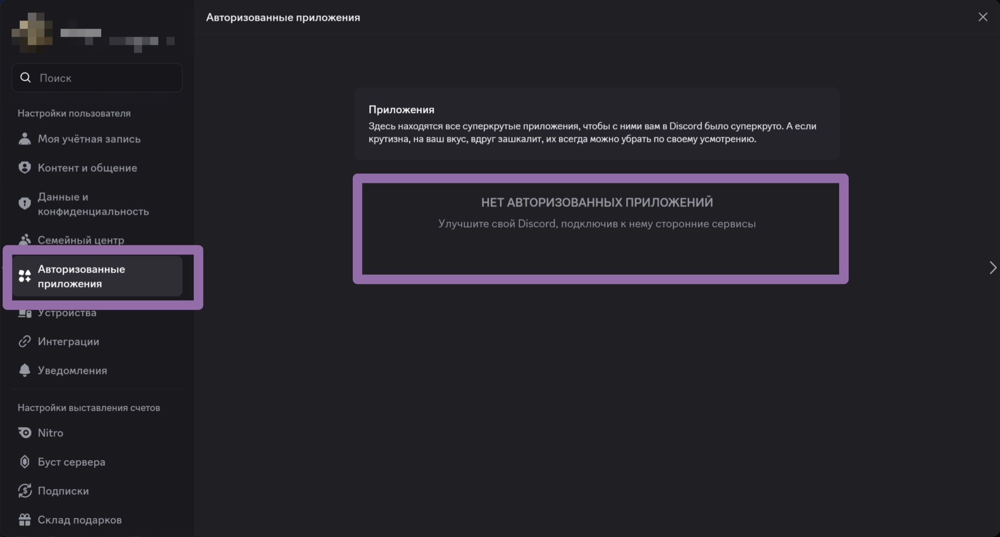
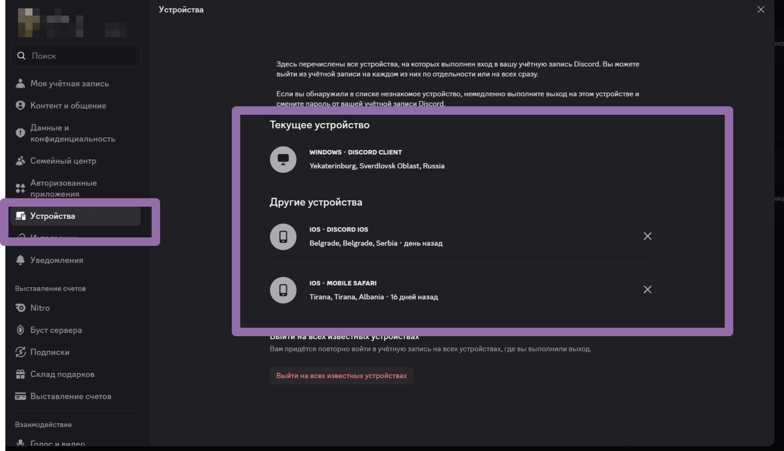

07
Мессенджер
Безопасность в Discord
Аккаунты Discord часто становятся целью из-за привязанных банковских карт, доступа к серверам и редких значков.
Вот практические рекомендации по защите:
Защити вход - используй 2FA
На компьютере:
В разделе Моя учетная запись нажмите Включить двухфакторную аутентификацию.

Скачайте и запустите приложение-аутентификатор(Authy или Google Authenticator)
отсканируйте QR-код с экрана или введите код вручную.
В поле Войти с вашим кодом введите шесть цифр, которые выдаст аутентификатор, и нажмите кнопку Активировать.

Готово, защита апнулась! Скачайте резервные коды

Также добавим ключ доступа. Нажмите на кнопку Добавить ключ доступа.
В разделе Моя учетная запись нажмите Зарегистрировать ключ безопасности.

Необходимо ввести код аутентификации или верифицироваться другим способом.
Нажмите Подтвердить

Нажимаем Поехали !

Выбираем место для сохранения ключа доступа и сканируем QR-код, который далее появится. Ключ доступа добавлен !

Защита от «угона» через QR-коды
Никогда не сканируйте QR-коды для входа, которые вам присылают в личные сообщения или которые обещают что-то «бесплатно».
При сканировании чужого QR-кода вы мгновенно передаёте злоумышленнику свой токен авторизации, обходя даже 2FA. Официальный вход по QR используется только для входа в ваш собственный клиент на ПК через мобильное приложение.
Настройки конфиденциальности
Отключите функцию «Разрешить личные сообщения от участников сервера» для крупных публичных серверов. Через них мошенники делают массовые рассылки с вредоносными ссылками.
Осторожность с файлами и ссылками
Никогда не скачивайте и не запускайте (скрипты и .exe) файлы от «разработчиков игр», которые просят протестировать их проект. Это один из самых частых способов кражи Discord-токена с помощью стилеров (вредоносного ПО).
Остерегайтесь поддельных ссылок: мошенники используют discord
app.com, dlscord.gift или discorcl.com. Оригинальный домен только — discord.com.
Авторизированные приложения и устройства.
Раз в месяц проверяйте раздел «Авторизованные приложения». Удаляйте всё, чем не пользуетесь. Некоторые боты могут получить права на вступление в серверы от вашего имени.

Также периодически проверяйте устройства. Если вы видите сомнительные сеансы, то лучше завершить их.
